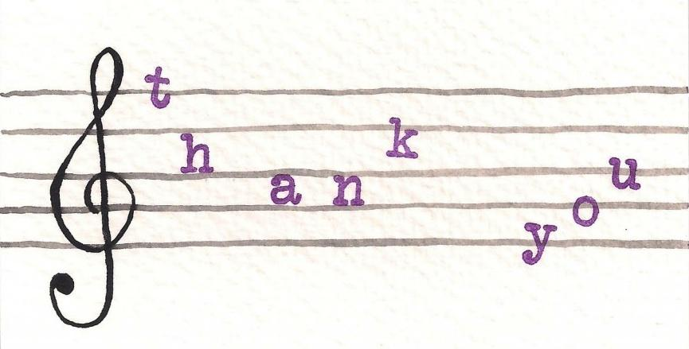

Acknowledgements
We would like to thank Professor Cuthbert for such a great semester, as we learned a lot about computational musicology and its origins. We had a lot of fun putting this project together. Michael Scott-Asato Cuthbert is the inspiration for this project, being its namesake. We built most of the project using his music21 framework in Python, for analysis, generation, and arrangement. As our inspiration and mentor for many of us, who were interested in the idea of electronic dance music arrangement, he has been there for us throughout the project to guide us in building CUTHBERT. He even provided us some datasets, such as Wikifonia, which helped us in performing analyses for extracting our desired features. Many thanks to Cuthbert!
References
- Splice Chord Progression MIDI Dataset: splice.com/blog/build-chord-progressions-free-midi/
- BasicWavez 50 Famous EDM Chord Progression MIDI Dataset: https://basicwavez.com/50-famous-edm-chord-progressions-free-midi-pack/